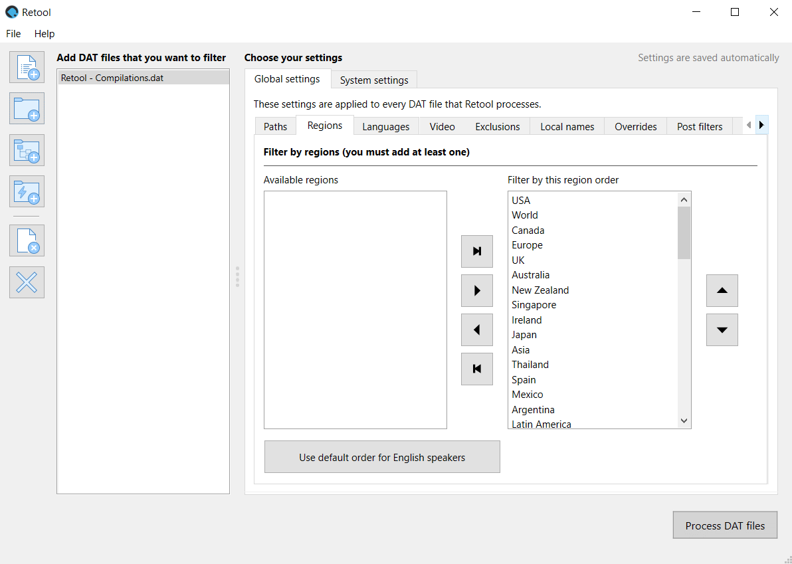
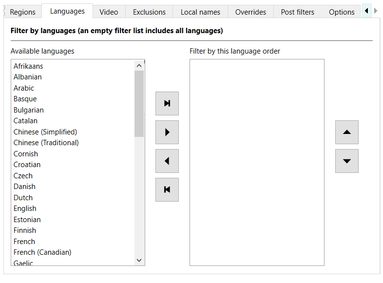

How to use Retool GUI
What follows is a step-by-step walkthrough of using Retool GUI and all of its features. If you're new to DAT management, it might be beneficial to spend some time reading about terminology, and after you've filtered a DAT file with Retool, check out the help documentation for your favorite ROM manager to learn how to use it.
Info
Depending on your operating system, all Python commands in this guide might need to be
prefixed with python or python3 to work.
Get started
The following sections cover the initial setup for Retool.
Download DAT files and Retool
Before you can filter DAT files, they need to be on your hard drive.
-
Download the DAT files for the system you want to verify. Retool supports DAT files from the following groups:
You might need to extract a ZIP file containing the DAT files to access them.
-
Download Retool, and follow the installation and update instructions for your platform.
Open Retool
Navigate to the folder you extracted Retool to, and double click retoolgui.exe. A
terminal window shows, which in turn loads the GUI. Don't close the terminal window,
as it's used for output.

Add or remove DAT files
To process DAT files, you first need to add them to your list:
- Click
 Add DAT files to the list to add individual files to the list.
Add DAT files to the list to add individual files to the list. - Click
 Add a folder of DAT files to the list to add all the DAT files in a single folder to the
list.
Add a folder of DAT files to the list to add all the DAT files in a single folder to the
list. - Click
 Add a folder of DAT files recursively to the list to add all the DAT files in a folder
and its subfolders to the list.
Add a folder of DAT files recursively to the list to add all the DAT files in a folder
and its subfolders to the list.
You can also remove DAT files from your list:
- Select one or more DAT files in the list, and then click
 Remove selected DAT files from the list to remove the DAT files from the list.
Remove selected DAT files from the list to remove the DAT files from the list. - Click Remove all DAT files from the list to clear the list.
You must have at least one DAT file in the list for the Process DAT files button to be enabled.
Set an output folder
Click Choose an output folder to set where you want Retool to output processed DAT files. Retool doesn't modify any of the DAT files added to the list; instead, it creates new versions of them in the specified folder.
Global and system settings
Settings are available at two levels in Retool: global and system.
-
Global settings are applied to every DAT Retool processes, so long as system settings don't override them.
-
System settings are applied to a specific system named in a DAT file. For example, you can have settings for just the Sony - PlayStation DAT file from Redump. System settings mostly mirror what's available in the global settings, although there are some unique features.
Priorities
Retool supports three different types of priorities: regions, languages, and video.
Regions
You must have at least one region in the Filter by these regions box for the Process DAT files button to be enabled. Only regions in Filter by these regions box are considered when Retool is processing a DAT file. If a title is from another region, it's removed from the output DAT file.
Order in the Filter by these regions box is important. For example, if you place USA above Europe, and the title exists in both regions, during processing Retool chooses the USA title.
Change the region order
To view the regions, in the Global settings or System settings tab, click the Regions tab.
You can move regions from the Available regions box to the Filter by these regions box in the following ways:
-
Drag and drop with the mouse.
-
Select one or more regions in the Available regions box, and then click
 Add regions.
Add regions. -
Click Add remaining regions, which adds the regions in the Available regions box to the end of the list in the Filter by these regions box.
-
Click Use default order for English speakers to add the recommended region order if English is your first language. This also attempts to prioritize NTSC regions over PAL regions.
You can move regions from the Filter by these regions box to the Available regions box in the following ways:
- Drag and drop with the mouse.
- Select one or more regions in the Filter by these regions box, and then click Remove regions.
- Click
 Remove all regions, which returns all regions to the Available regions box.
Remove all regions, which returns all regions to the Available regions box.
You can change the order of the regions in the Filter by these regions box in the following ways:
-
Drag and drop with the mouse.
-
Select one or more regions in the Filter by these regions box, and then click Up or
 Down.
Down.
Tip
A combination of Ctrl (Cmd on macOS), Shift, and clicking allows for multiple region selections.
Languages
If no languages are in the Filter by these languages box, then Retool considers all languages during processing, and infers a language order from your region order.
If you add languages to the Filter by these languages box, then only those languages are considered when Retool is processing a DAT file. If a title doesn't support a language in that list, it's removed from the output DAT file unless the language is unknown.
Order in the Filter by these languages box is important. For example, if you have the following title names in an input DAT file:
This is a title (Europe) (En,Fr,De)
This is a title (Europe) (En,Fr,De,Es,It)
This is a title (Europe) (Es)
This is a title (Europe) (Fr,De,Es,It)
And the following language order:
-
English
-
Spanish
-
Italian
Then the following title is selected as the 1G1R title:
And these titles are removed from consideration:
This is a title (Europe) (Es)
This is a title (Europe) (Fr,De,Es,It)
This is a title (Europe) (En,Fr,De)
This is because This is a title (Europe) (En,Fr,De,Es,It) supports all three languages.
Change the language order
To view the languages, in the Global settings or Sytem settings tab, click the Languages tab.

You can move languages from the Available languages box to the Filter by these languages box in the following ways:
-
Drag and drop with the mouse.
-
Select one or more languages in the Available languages box, and then click
Add languages. -
Click Add remaining languages, which adds the languages in the Available languages box to the end of the list in the Filter by these languages box.
You can move languages from the Filter by these languages box to the Available languages box in the following ways:
- Drag and drop with the mouse.
- Select one or more languages in the Filter by these languages box, and then click Remove languages.
- Click
Remove all languages, which returns all languages to the Available languages box.
You can change the order of the languages in the Filter by these languages box in the following ways:
-
Drag and drop with the mouse.
-
Select one or more languages in the Filter by these languages box, and then click Up or
Down.
Tip
A combination of Ctrl (Cmd on macOS), Shift, and clicking allows for multiple language selections.
Video
Video standards are processed after regions, languages, and many other criteria like
versions and supersets. Additionally, a video standard is only determined by an explicit
tag in a title's name, for example This is a title (World) (NTSC). As such, the video
order is effectively only used as a tie-breaker when choosing between two titles that both
specify a video standard in their names. Don't expect to get NTSC titles if you prioritize
NTSC as a video standard, but put Europe first in your region order.
Change the video order
To view the video order, in the Global settings or Sytem settings tab, click the Video tab.
You can change the order of the video standards in the Video order box in the following ways:
-
Drag and drop with the mouse.
-
Select one or more video standards in the Video order box, and then click Up or
Down.
Tip
A combination of Ctrl (Cmd on macOS), Shift, and clicking allows for multiple language selections.
Exclusions
Retool can exclude specific types of titles from the output DAT file. These exclusions are
either based on the <category> tag found in DAT files, or on a string in the title's
name.
To add exclusions, in the Global settings or System settings tab, click the Exclusions tab.
The available exclusions are as follows:
-
Add-ons
Titles with the DAT categoryAdd-Ons. This includes expansion packs and additional materials for titles. -
Applications
Titles with the DAT categoryApplications, or with the following text in the name:(Program)(Test Program)Check ProgramSample Program
-
Audio
Titles with the DAT categoryAudio. These might be used as soundtracks by games. -
Bad dumps
Titles marked as bad dumps with a[b]in the name. -
BIOS and other chips
Titles with the DAT categoryConsole, or with the following text in the name:[BIOS](Enhancement Chip)
-
Bonus discs
Titles with the DAT categoryBonus Discs. These could be anything other than the main title content, like patches, manuals, collector discs, or otherwise. -
Coverdiscs
Titles with the DAT categoryCoverdiscs. These were discs that were attached to the front of magazines, and could contain demos, or rarely, full games. -
Demos, kiosks, and samples
Titles with the DAT categoryDemos, or with the following text in the name:@barai(Demo [1-9])(Demo-CD)(GameCube Preview)(Kiosk *|* Kiosk)(Preview)Kiosk Demo DiscPS2 KioskPSP System KioskSampleTaikenbanTrial Edition
-
Educational
Titles with the DAT categoryEducational. -
Manuals
Titles with(Manual)in the name. -
MIA
Titles or ROMs declared as missing in action in the clone lists or DAT files. -
Multimedia
Titles with the DAT categoryMultimedia. These might include games. -
Pirate
Titles with(Pirate)in the name. -
Preproduction
Titles with the DAT categoryPreproduction, or with the following text in the name:(Alpha [0-99])(Beta [0-99])(Pre-Production)(Possible Proto)(Proto [0-99])(Review Code)
-
Promotional
Titles with the DAT categoryPromotional, or with the following text in the name:(Promo)EPKPress Kit
-
Unlicensed
Titles unauthorized by console manufacturers, marked by the following text in the name:(Unl)(Aftermarket)(Homebrew)
-
Video
Titles with the DAT categoryVideo.
Options
Options change Retool's behavior either at the title level, or the broader DAT level.
To set options, in the Global settings or System settings tab, click the Options tab.

Title options
These options change how Retool handles certain titles.
-
Disable 1G1R filtering
Ignore clone lists, and treat each title as unique. Useful if you want to keep everything from a specific set of regions and/or languages. You can use this in combination with Split the output into multiple DAT files based on region to treat Retool as a region splitter and nothing more.
If this option is disabled, it's because you've enabled Output DAT in legacy parent/clone format, which isn't compatible with this feature. -
Prefer regions over languages
By default, if a title from a higher priority region doesn't support your preferred languages but a lower priority region does, Retool selects the latter. This option disables this behavior, forcing strict adherence to region priority regardless of language support
This option also overrides similar behavior in superset selection, which means you might get a title that was released in your preferred region that has less content, instead of one that was released in another region that contains more content and supports your preferred languages. -
Include titles without hashes or sizes specified in the input DAT file
Some DAT files don't list any hashes or sizes for some files, and Retool filters these out by default. This option makes sure those files are kept. -
Prefer titles ripped from modern rereleases over original system releases
For the sake of emulator compatibility, Retool prefers versions of games released on the original system instead of those ripped from rereleases on platforms like Virtual Console and Steam. This option reverses that behavior. -
Prefer licensed versions over unlicensed, aftermarket, or homebrew titles
Sometimes games are rereleased long after the lifespan of a console, in regions they weren't originally available in. By default Retool selects these titles if they match your preferred region/language priorities.
Enable this option to choose a production version of a title over the unlicensed/aftermarket/homebrew title if possible. This might select titles from a lower priority region, or with lower priority languages, or with less features. -
Disable global and system user filters
Ignore both global and system user filters.
Output options
These options change the files that Retool outputs as part of its process.
-
Split the output into multiple DAT files based on region
Instead of one output DAT containing all the filtered results, split the output into multiple DAT files based on the regions you've selected. If this is disabled, it's because you've enabled Output DAT in legacy parent/clone format, which isn't compatible with this option. -
Also output a DAT file of all the removed titles
In addition to the output DAT file, create another DAT file containing the titles Retool removed. -
Also output lists of what titles have been kept and removed
In addition to the output DAT file, produce a TXT file that lists what titles have been kept, and what titles have been removed. -
Also output a list of just the title names from the output DAT file
In addition to the output DAT file, produce a TXT file that lists only the name of each title in the output DAT file, and optionally add a prefix and suffix to each name. If you add a prefix that starts withhttp://,https://orftp://, each line in the file is URL encoded.
Debug options
These options are useful for developing and testing Retool.
-
Report clone list warnings during processing
Turn on warnings when there are mismatches between the clone list and the DAT file. -
Pause on clone list warnings
Pause Retool each time a clone list warning is issued. -
Output DAT in legacy parent/clone format
Not recommended unless you're debugging or comparing outputs between DAT versions. If this is disabled, it's because you've disabled 1G1R filtering or chosen to split by region, which isn't compatible with this option. -
Bypass DTD validation
Skips DTD validation of DAT files, useful if validation is causing issues. -
Disable multiprocessor usage
Forces Retool to use only a single CPU core, at the cost of performance. This can be useful when debugging Retool, as multiprocessor doesn't cope well withinputstatements. -
Trace a title through Retool's process
Follows a title through Retool's selection process for debugging. Accepts a regular expression. To function properly, this disables using multiple processors during parent selection.
Tip
If you don't know regular expressions, also known as "regexes", you can learn the basics at regexlearn.com. You want to be well practiced before using them, as without proper care they can lead to unintended consequences.
User filters
User filters override the default choices Retool makes by force including or excluding titles whose names match a certain string. Each filter must be on its own line.
Note
If Retool has genuinely missed a relationship between titles, please don't just create a filter — create an issue too so the clone lists or Retool can be updated.

There are three different match types:
- Plain text indicates a partial string match.
- A prefix of
/indicates a regular expression match. - A prefix of
|indicates a full string match.
Additionally, you can wrap any of these strings in <> to also remove any match's related
clones.
Additionally, there are rules when it comes to user filters, and how they interact at the global settings and system settings level:
- System includes override all excludes.
- System excludes override global includes.
- Global includes override global excludes.
To set user filters, in the Global settings or System settings tab, click the User filters tab.
Partial matches
If a line isn't prefixed with | (full match) or / (regular expression) in an
Exclude or Include box, then it's interpreted as a partial match. A partial
match looks for the specified text inside all title names.
For example, if an input DAT contains the following title names:
Do You Think it's Hot (USA)
Do You Think it's Hot (USA) (Alt)
It's Pretty Cold (Japan)
I Can't Find My Hotel (Europe)
And you put the following text in the Exclude box:
Every title in the example list is excluded from the output DAT file. This is because
Cold matches It's Pretty Cold (Japan), and Hot matches every other title, as it's
found in both the word Hot and Hotel.
If we also add the following text to the Include box:
The behavior changes again:
- The include for
Hooverrides the exclude forHot. - The include for
Hoprevents Retool from assigningDo You Think it's Hot (USA) (Alt)toDo You Think it's Hot (USA)as a clone, meaning both titles end up in the output DAT file.
As you can see, you need to be careful when using partial matches.
Regular expressions
If you're familiar with regular expressions, also known as "regexes", you know the power
(and pain) that they can bring. To define an include or exclude as a regex, prefix it
with a forward slash (/).
Tip
If you don't know regex, you can learn the basics at regexlearn.com. You want to be well practiced before using them, as without proper care they can lead to unintended consequences.
For example, if an input DAT file contains the following title names:
Do You Think it's Hot (USA)
Do You Think it's Hot (USA) (Alt)
It's Pretty Cold (Japan)
I Can't Find My Hotel (Europe)
And you put the following text in an Exclude box:
All titles beginning with I are excluded from the output DAT file.
If you also put the following text in an Include box:
All USA titles are kept, even if they start with I. In our example list the (Alt)
title is usually removed by Retool as a clone of the original, but the include filter
makes sure it's kept.
Full matches
Full matches only apply to titles with the exact same name. To define an include or
exclude as a full match, prefix it with a pipe (|).
For example, if an input DAT file contains the following titles:
Do You Think it's Hot (USA)
Do You Think it's Hot (USA) (Alt)
It's Pretty Cold (Japan)
I Can't Find My Hotel (Europe)
And you put the following text in an Exclude box:
Then that title is excluded from the output DAT file.
If you remove the exclude, and then put the following text in an Include box:
Then that title is kept in the output DAT file, and the final titles chosen are:
Do You Think it's Hot (USA)
Do You Think it's Hot (USA) (Alt)
It's Pretty Cold (Japan)
I Can't Find My Hotel (Europe)
In our example list the (Alt) title is usually removed by Retool as a clone of the
original, but the include filter makes sure it's kept.
System settings
To view a DAT file's system settings, click the System settings tab, and then click a DAT file that you've added to your list.
System settings are applied to a specific system named in a DAT file. For example, you can have settings for just the Sony - PlayStation DAT file from Redump. When you load a different version of that DAT file in Retool, so long as the system name and release group haven't changed, the system settings still apply.
On most system settings tabs there is an Override global settings checkbox. When selected, this means that the system settings are used for those settings instead of the global ones whenever that DAT file is processed.
System settings mostly mirror what's available in the global settings, although there are some unique features.
Paths
The Paths tab is unique to system settings, and lets you select a custom output folder, clone list, and metadata file for the selected system. If the override checkbox is selected and a path hasn't been chosen for one of these options, then that option uses the default or global setting instead.
System user filters
The User filters tab in the system settings has no override checkbox. Instead, it interacts with the global settings user filters. See User filters for how the global and system user filters interact, and the rules for creating the filters.